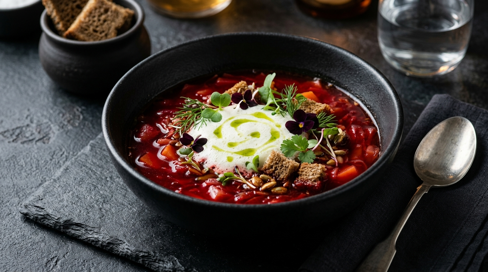
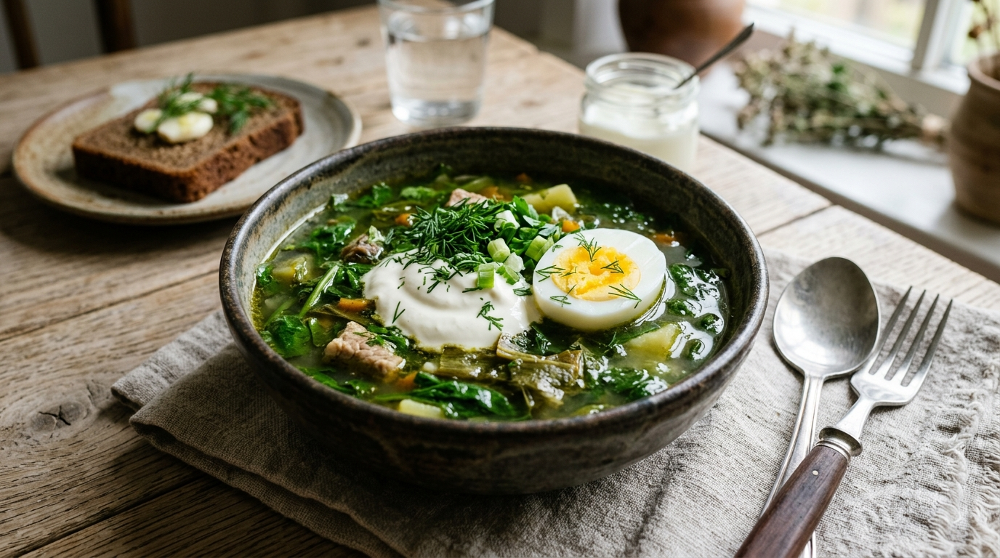
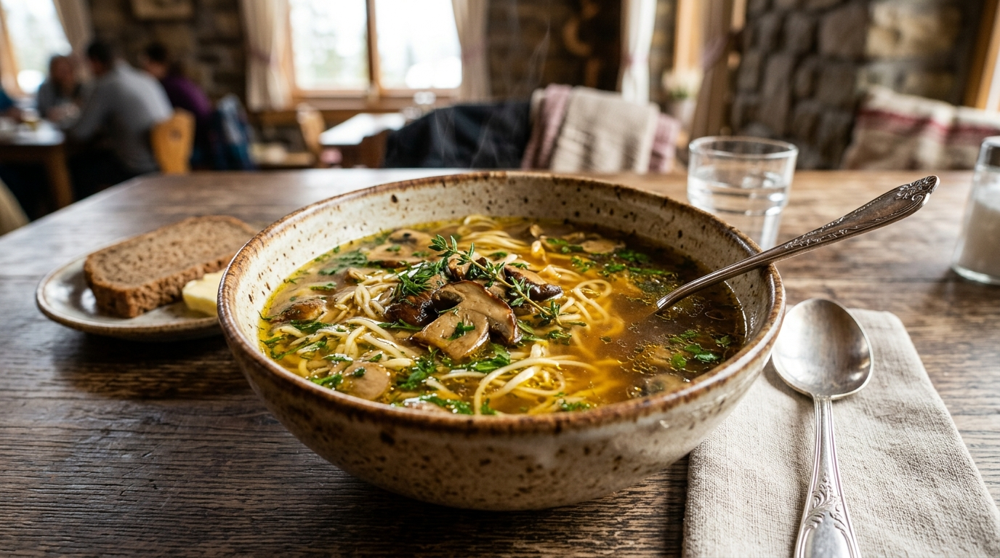
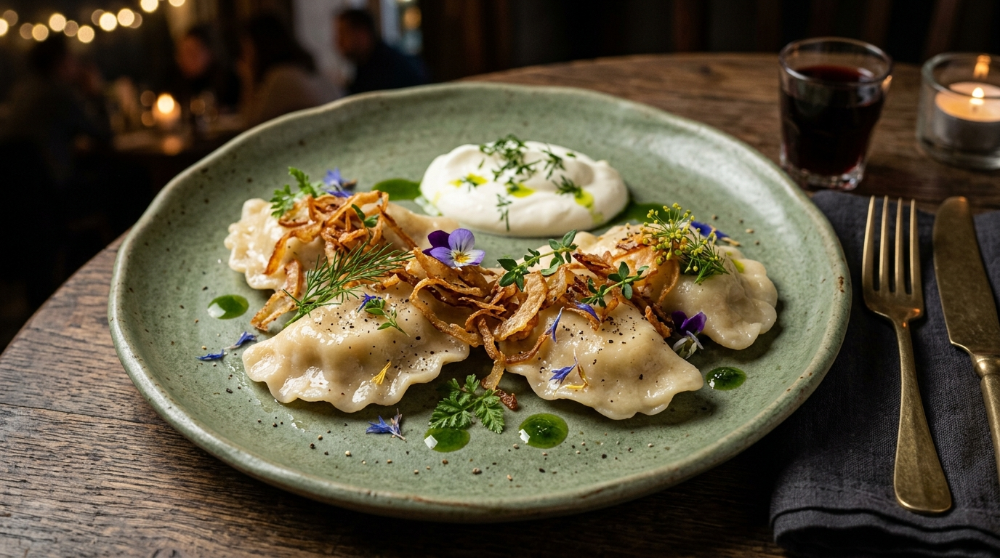
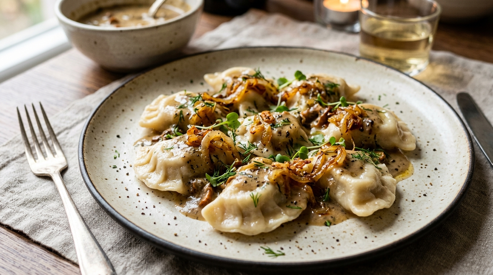
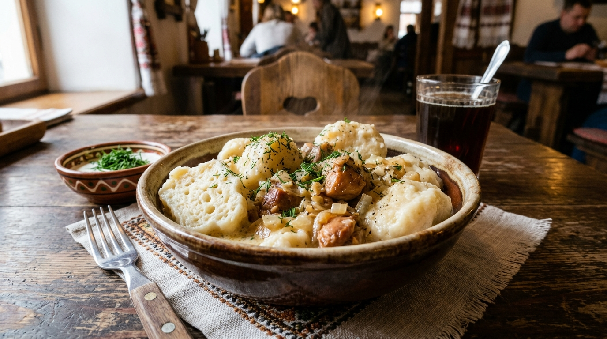
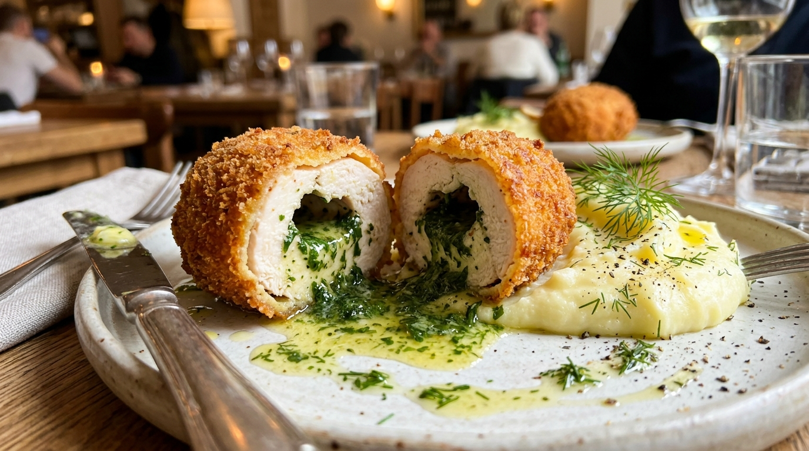
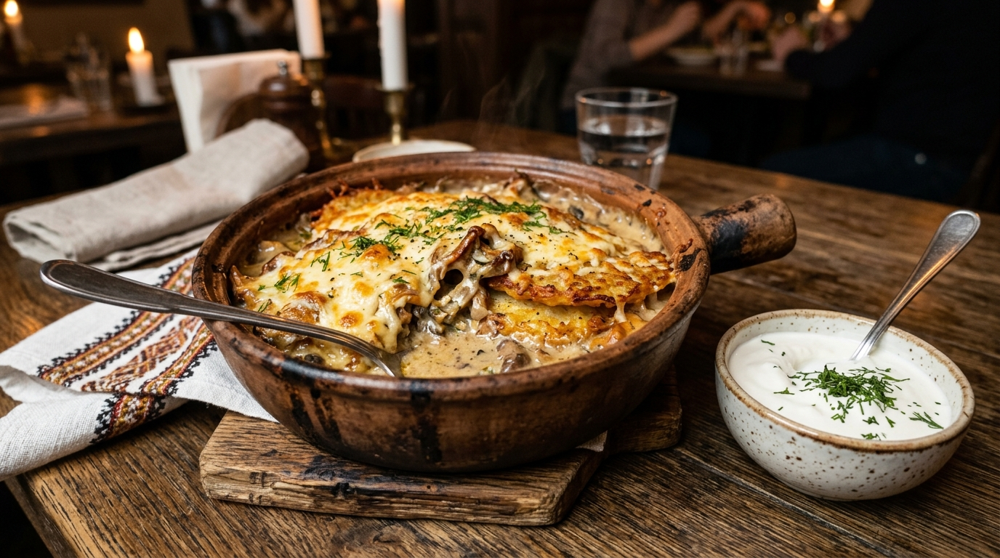
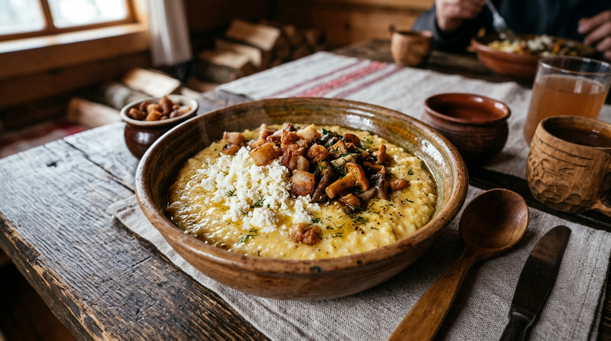

Всі страви готуються зі свіжих продуктів українських фермерів.
Спробуйте змінити пошуковий запит або скинути фільтри.

Традиційний червоний борщ з печі з яловичиною, квасолею та свіжою зеленню.

Легкий весняний борщ зі свіжого щавлю, перепелиним яйцем та фермерською сметаною.

Ароматний суп із білих сушених грибів з домашньою яєчною локшиною.

Класичні вареники ручної ліпки зі смаженою цибулею та вершковим маслом.

Соковита томлена яловичина, тонке ніжне тісто та соус із лісових грибів.

Пухкі галушки на кефірі з ніжною курячою печінкою та вершковим соусом.

Хрустка скоринка, зелене масло із зеленню та м'ятою, гарнір із картоплі.

Запечені хрусткі деруни з грибною підливою та тертим сиром у печі.

Кукурудзяна каша на вершках з овечою бринзою та підсмаженими шкварками.